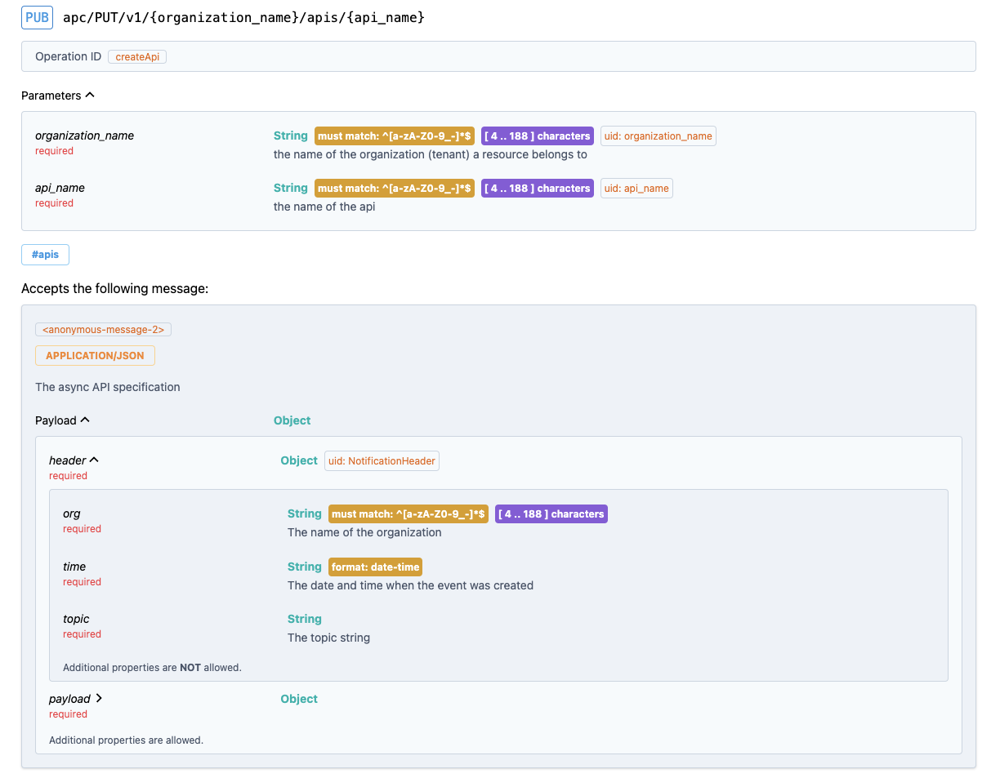

Setup and configure a Notification Hub
This guide explains how to create a Notification Hub and enable Organization Notifications. See below for an explanation of these concepts.
APIs available for the Notification Hub
The Hub can provide:
Producer API
Consumer APIs
Producer API
Allows to create apps that can act as producers of notifications.
Includes ability to publish any type of Notification for any resource
API
API Product
Apps
Environment
The Async API contract for the producer can be found on your Connector:
http://<CONNECTOR_HOST>:<CONNECTOR_PORT>/notification-api/producer/api.yml
Example - event produced on creation of an API:
Consumer APIs
There are Async APIs for speparate groups of events. These groups mirrot the groups (tags) used in the Connector’s OpenAPI This allows to offer one or more specific sets of notifications as API Products for consuming applications.
These are the Async APIs available:
API Resource Notificiations: apis.yml
API Product Resource Notifications: apiProducts.yml
Teams and team apps Resource Notifications: teams.yml
Developers and developer apps Resource Notifications: developers.yml
Apps Resource Notifications (including teams and developers apps): apps.yml
Environments Resource Notifications: environments.yml
Management Resource Notifications: management.yml
All of the above API Contracts are available on the Connector for download at this Base URL:
http://<CONNECTOR_HOST>:<CONNECTOR_PORT>/notification-api/consumer
For example the APIs contract can be found at
http://<CONNECTOR_HOST>:<CONNECTOR_PORT>/notification-api/consumer/apis.yml
Example - event emitted on creation of an API:

Create a Notification Hub Organization
To create the Hub you can use the Connector configuration tool located in https://github.com/solace-iot-team/platform-api/tree/main/api-implementation/tools
The tool expects a configuraiton file that it applies to generate the required object in the Connector such as Organization, Environments, APIs. The template below can also be found in the same github location (notification.hub.template.json). You will need to adjust the values in brackets <> and you may want to taylor the list of APIs that should be set up in your Hub. See comments below.
{
"server": {
"baseUrl": "http:/<CONNECTOR_HOST>:<CONNECTOR_PORT>/v1",
"admin": {
"username": "<CONNECTOR_ADMIN>",
"password": "${env:SERVER_ADMIN_PASSWORD}"
}
},
"organization": {
"name": "<HUB_ORGANIZATION>",
"token": "${env:ORGANIZATION_CLOUD_TOKEN}",
"admin": {
"username": "<ORG_ADMIN>",
"password": "${env:ORGANIZATION_ADMIN_PASSWORD}"
}
},
"services": [
"<Solace PS+ Service Name>"
],
"apis": {
"NotificationProvider": "http://<CONNECTOR_HOST>:<CONNECTOR_PORT>/notification-api/producer/api.yml",
"APINotifications": "http://<CONNECTOR_HOST>:<CONNECTOR_PORT>/notification-api/consumer/apis.yml",
"APIProductNotifications": "http://<CONNECTOR_HOST>:<CONNECTOR_PORT>/notification-api/consumer/apiProducts.yml",
"TeamNotifications": "http://<CONNECTOR_HOST>:<CONNECTOR_PORT>/notification-api/consumer/teams.yml",
"DeveloperNotifications": "http://<CONNECTOR_HOST>:<CONNECTOR_PORT>/notification-api/consumer/developers.yml",
"AppNotifications": "http://<CONNECTOR_HOST>:<CONNECTOR_PORT>/notification-api/consumer/apps.yml",
"EnvironmentNotifications": "http://<CONNECTOR_HOST>:<CONNECTOR_PORT>/notification-api/consumer/environments.yml",
"ManagementNotifications": "http://<CONNECTOR_HOST>:<CONNECTOR_PORT>/notification-api/consumer/management.yml"
},
"application": {
"name": "<PROVIDER_APP_NAME>",
"owner": "<DEV_NAME>",
"credentials": {
"username": "${env:APPLICATION_CONSUMER_KEY}",
"password": "${env:APPLICATION_CONSUMER_SECRET}"
}
}
}
Let’s look at the detail of this configuration:
The
serverelement contains how the tool should connect.You need to adjust two values in the element:
baseUrl- replace the<CONNECTOR_HOST>and<CONNECTOR_PORT>with the values where your Connector is runningadmin.username- replace the value with the admin user of your connector (needs to haveplatform-adminrole).
You also need to provide the server password as an envirohnment variable.
The
organizationelement describes the Hub Organization:You need to adjust the followig elements: *
name- the name for the Hub Organizationadmin.username- the username of an organization admin (needs to haveorg-adminrole).
The
serviceselement lists the PS+ Services that should be configured as environments:You need to list the Service names as shown in Solace Cloud Mission Control
The
apissection lists all the Async APIs that should be uploaded into the Hub.You need to replace the <CONNECTOR_HOST> and <CONNECTOR_PORT> in all the URLs with the values where your Connector is running.
You can remove any APIs that you don’t need. You can always upload these APIs later, for example via the Async APIM Portal.
The
applicationsection list the information required to set up a default appProvide an app name in the
nameelement. Also replace theownervalue with a developer name that you would like to use for the owner.The app credentials can be provided in the environment variables.
Warning
TODO - instructions - To execute the tool setup your environment variables and run …
Configure and manage the Hub
Warning
TODO - add section
Outline:
Overview of what was set up
Obtaining configuration to use the Hub with an organization
How to set up a target application